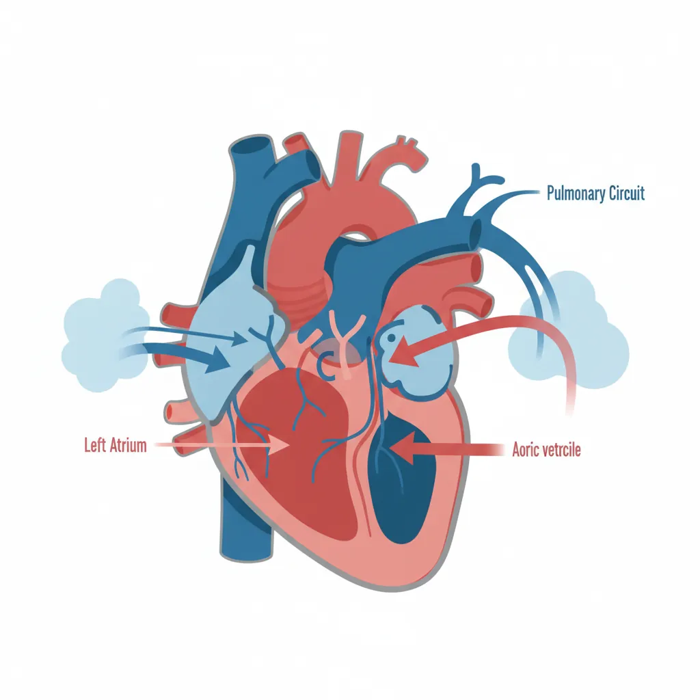
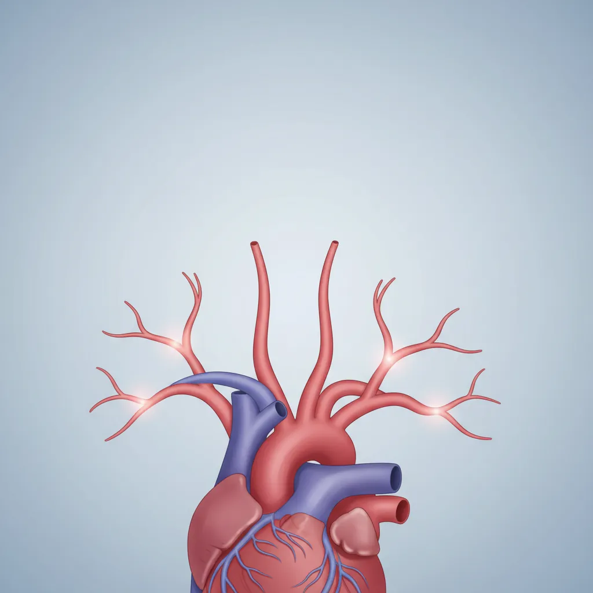
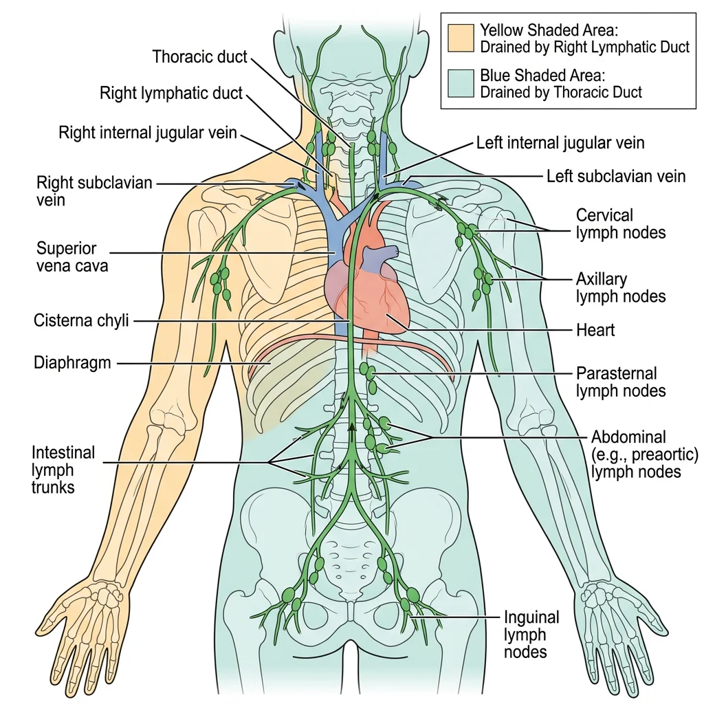
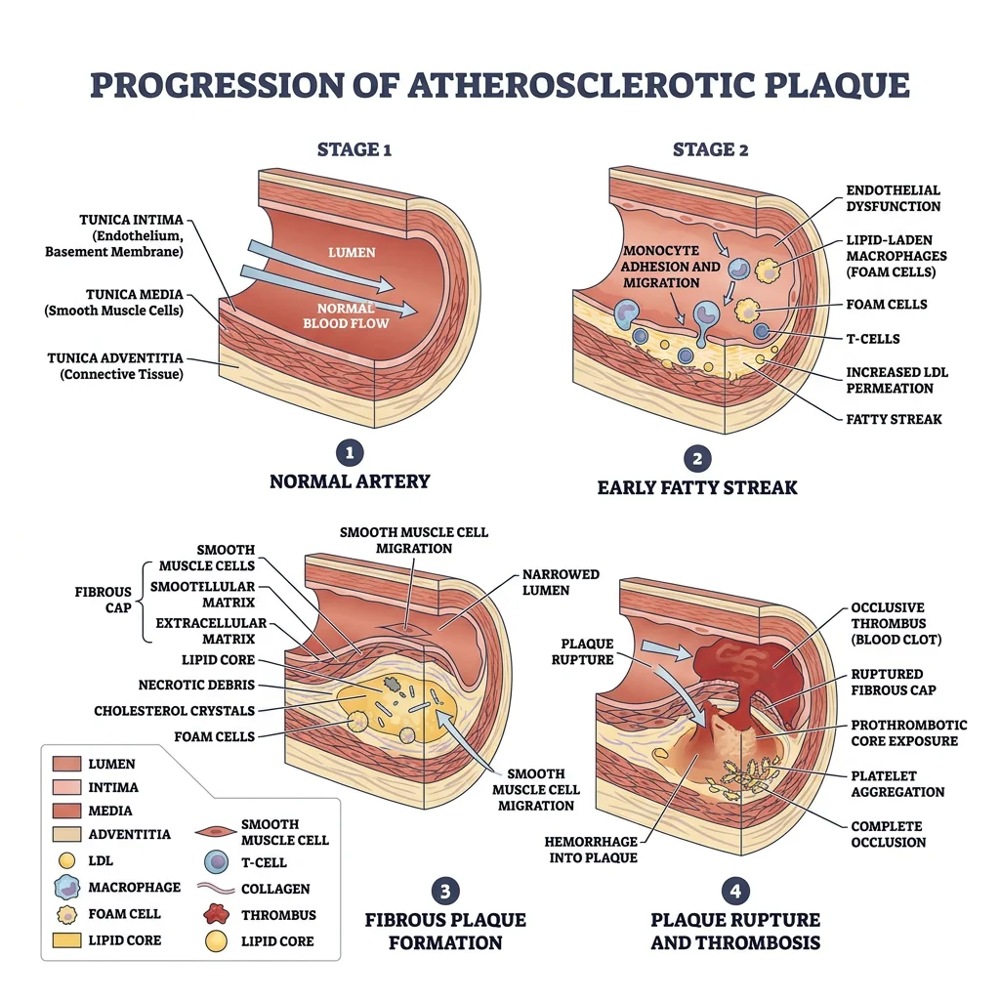
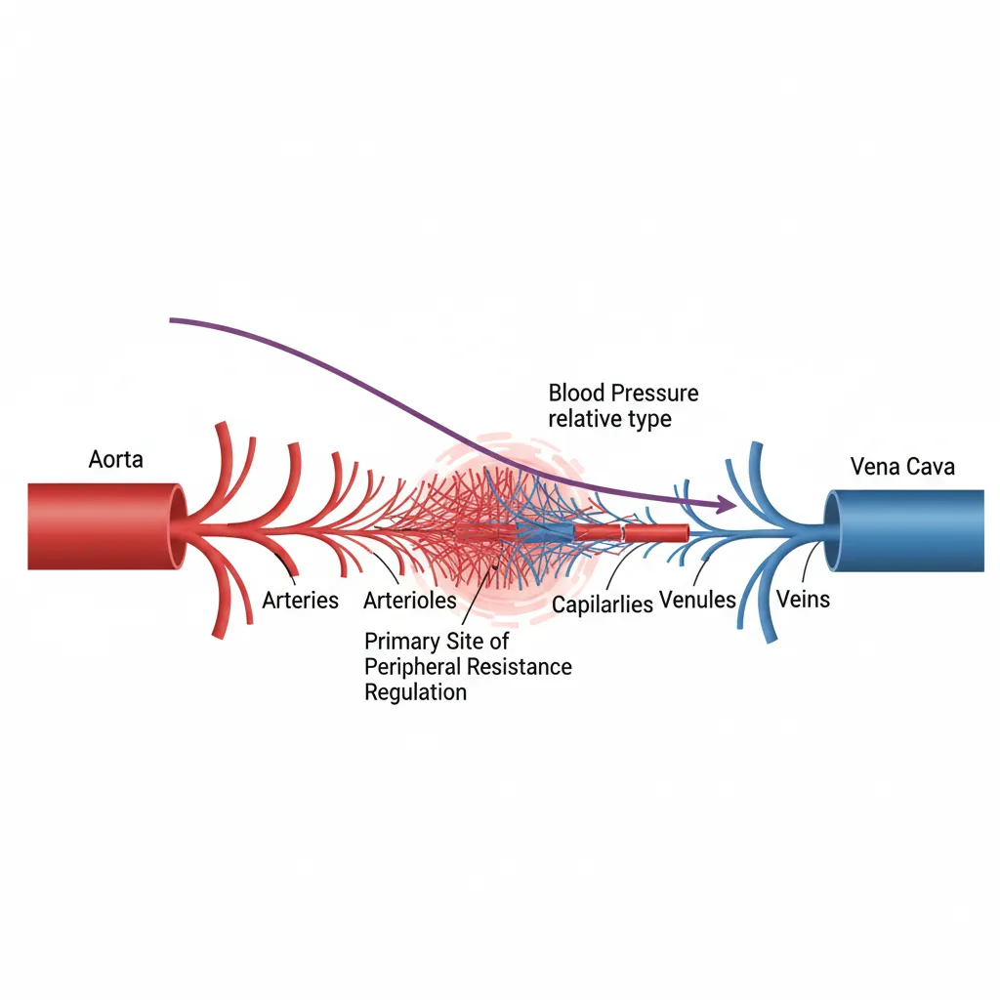

Human Anatomy Mastery
Anatomical Terminology & Body Planes
Directional terms, planes, cavities, tissuesSkeletal System & Joints
Osteology, axial & appendicular, arthrologyMuscular System & Movement
Muscle types, functional groups, biomechanicsCardiovascular & Lymphatic Anatomy
Heart, vessels, lymphatics, clinical linksNervous System & Neuroanatomy
CNS, PNS, autonomic, functional pathwaysVisceral Anatomy — Thorax & Abdomen
Thoracic & abdominal organs, peritoneumHead, Neck & Special Senses
Skull foramina, eye, ear, oral anatomySurface Anatomy & Clinical Imaging
Landmarks, X-ray, CT, MRI, proceduresHistology & Microscopic Anatomy
Cell ultrastructure, tissue & organ histologyEmbryology & Developmental Anatomy
Germ layers, organogenesis, malformationsFunctional & Applied Anatomy
Biomechanics, posture, gait, integrationRegional Dissection Mastery
Upper/lower limb, thorax, abdomen, pelvisHeart Anatomy
The heart is arguably the most iconic organ in human anatomy — a hollow, muscular pump roughly the size of a clenched fist, situated in the mediastinum of the thoracic cavity between the lungs. Beating approximately 100,000 times per day, it propels around 7,500 litres of blood through nearly 100,000 kilometres of vessels. Understanding cardiac anatomy is the gateway to cardiology, cardiac surgery, and emergency medicine.

William Harvey & the Circulation of Blood (1628)
For over a thousand years, Galen's theory that blood was continuously produced and consumed held sway. English physician William Harvey overturned this dogma in his landmark work De Motu Cordis (1628), demonstrating through careful experiments — including ligating blood vessels and measuring cardiac output — that blood circulates in a closed loop. Harvey calculated that the heart pumps far more blood than could possibly be produced and consumed, proving the existence of a circulatory system. This discovery is considered one of the most important in the history of medicine.
Chambers
The heart contains four chambers arranged in two functional pairs — the right side handles pulmonary circulation (to the lungs) while the left side drives systemic circulation (to the entire body).
| Chamber | Wall Thickness | Receives Blood From | Pumps Blood To | Key Feature |
|---|---|---|---|---|
| Right Atrium | ~2 mm | Superior & inferior vena cava, coronary sinus | Right ventricle | Contains SA node (pacemaker) |
| Right Ventricle | ~5 mm | Right atrium | Pulmonary trunk → lungs | Crescent-shaped on cross-section |
| Left Atrium | ~3 mm | Four pulmonary veins (oxygenated blood) | Left ventricle | Smoothest interior wall |
| Left Ventricle | ~13 mm | Left atrium | Aorta → entire body | Thickest wall; circular cross-section |
The left ventricular wall is approximately three times thicker than the right because it must generate enough pressure to push blood through the entire systemic circulation — from head to toe and back — whereas the right ventricle only needs to push blood the short distance to the lungs.
Valves & Septa
Heart valves are one-way gates that ensure blood flows in a single direction. There are two types:
- Atrioventricular (AV) Valves — between atria and ventricles, preventing backflow during ventricular contraction:
- Tricuspid valve (right side) — three cusps, anchored by chordae tendineae to papillary muscles
- Mitral (bicuspid) valve (left side) — two cusps, the most commonly affected valve in rheumatic heart disease
- Semilunar Valves — at the exit of each ventricle, preventing backflow during ventricular relaxation:
- Pulmonary valve — guards the pulmonary trunk
- Aortic valve — guards the aorta; behind its cusps lie the openings of the coronary arteries
The septa are walls that divide the heart: the interatrial septum separates the two atria (site of the fossa ovalis, remnant of the foramen ovale), and the interventricular septum separates the two ventricles (largely muscular with a small membranous portion).
Coronary Circulation
The heart muscle (myocardium) cannot extract enough oxygen from the blood passing through its chambers — it requires its own dedicated blood supply via the coronary arteries, which arise from the aortic sinuses just above the aortic valve.
| Artery | Major Branches | Territory Supplied | Clinical Significance |
|---|---|---|---|
| Left Coronary Artery (LCA) | Left anterior descending (LAD), Circumflex (LCx) | Anterior left ventricle, interventricular septum, lateral wall | LAD occlusion = "widow maker" — large anterior MI |
| Right Coronary Artery (RCA) | Marginal branch, Posterior descending (PDA in ~85%) | Right atrium, right ventricle, inferior left ventricle, SA node (60%), AV node (80%) | RCA occlusion → inferior MI, potential heart block |
Venous drainage of the heart flows primarily into the coronary sinus, a large venous channel on the posterior surface of the heart that empties into the right atrium. The great cardiac vein, middle cardiac vein, and small cardiac vein are tributaries. Some smaller veins (venae cordis minimae) drain directly into the heart chambers.
The "Widow Maker" — LAD Occlusion
A 55-year-old man presents to the emergency department with crushing substernal chest pain radiating to his left arm and jaw. ECG shows ST-segment elevation in leads V1-V4 (anterior leads). Troponin levels are markedly elevated. Diagnosis: anterior ST-elevation myocardial infarction (STEMI) due to complete occlusion of the left anterior descending artery. This scenario underscores why the LAD is called the "widow maker" — it supplies over 50% of the left ventricular myocardium. Prompt percutaneous coronary intervention (PCI) with stent placement within 90 minutes of presentation is the standard of care.
Conduction System
The heart generates its own electrical impulses through a specialised conduction system — no neural input is required for basic rhythmicity (though the autonomic nervous system modulates rate).
| Structure | Location | Intrinsic Rate | Function |
|---|---|---|---|
| SA Node | Right atrium, near SVC junction | 60-100 bpm | Primary pacemaker — initiates each heartbeat |
| AV Node | Interatrial septum, near coronary sinus | 40-60 bpm | Delays impulse (~0.1 s) — allows atrial filling of ventricles |
| Bundle of His | Interventricular septum | 20-40 bpm | Transmits impulse from atria to ventricles |
| Bundle Branches | Right and left sides of septum | 20-40 bpm | Right branch → right ventricle; Left branch → left ventricle |
| Purkinje Fibres | Ventricular walls (subendocardial) | 15-20 bpm | Rapid depolarisation of ventricles from apex → base |
Vascular System
The vascular system is an extensive network of arteries, veins, and capillaries that forms a closed circuit for blood transport. Arteries carry blood away from the heart (generally oxygenated, except pulmonary arteries), while veins carry blood toward the heart (generally deoxygenated, except pulmonary veins). Understanding vascular anatomy is fundamental for surgical planning, catheterisation procedures, and interpreting angiography.

Major Arteries & Veins
The aorta is the largest artery in the body, arising from the left ventricle and divided into the ascending aorta, aortic arch, descending thoracic aorta, and abdominal aorta. From the aortic arch, three great vessels emerge: the brachiocephalic trunk (which divides into the right common carotid and right subclavian), the left common carotid, and the left subclavian.
| Region | Major Arteries | Major Veins |
|---|---|---|
| Head & Neck | Common → Internal/External carotid; Vertebral arteries | Internal/External jugular veins |
| Upper Limb | Subclavian → Axillary → Brachial → Radial/Ulnar | Cephalic, Basilic → Axillary → Subclavian |
| Thorax | Thoracic aorta, Intercostal arteries, Internal thoracic | Azygos system, Internal thoracic veins |
| Abdomen | Coeliac trunk, Superior/Inferior mesenteric, Renal | Inferior vena cava, Hepatic portal vein |
| Pelvis | Common → Internal/External iliac | Common → Internal/External iliac veins |
| Lower Limb | External iliac → Femoral → Popliteal → Anterior/Posterior tibial | Great/Small saphenous → Femoral → External iliac |
Portal Systems
A portal system is a unique arrangement where blood passes through two capillary beds in series before returning to the heart. The body has two major portal systems:
- Hepatic Portal System: Blood from the gastrointestinal tract, spleen, and pancreas drains into the hepatic portal vein, which delivers nutrient-rich (and potentially toxin-laden) blood to the liver sinusoids — a second capillary bed. Here the liver processes nutrients, detoxifies substances, and metabolises drugs before blood enters the hepatic veins → inferior vena cava. This system explains why oral medications undergo "first-pass metabolism" and why liver cirrhosis causes portal hypertension with oesophageal varices.
- Hypothalamic-Hypophyseal Portal System: Hypothalamic neurons release hormones into a capillary network that drains into portal veins running down the pituitary stalk to a second capillary bed in the anterior pituitary. This allows the hypothalamus to precisely regulate pituitary hormone secretion using extremely small quantities of releasing/inhibiting hormones.
Portal Hypertension & Oesophageal Varices
A 58-year-old man with a history of chronic alcoholism presents with massive haematemesis (vomiting blood). Examination reveals jaundice, ascites, and splenomegaly. His liver disease has caused portal hypertension — elevated pressure in the hepatic portal system. Blood seeks alternative routes back to the heart through portosystemic anastomoses, including veins around the lower oesophagus. These thin-walled collateral vessels become engorged (varices) and can rupture catastrophically. Understanding the hepatic portal system anatomy directly explains this life-threatening clinical scenario.
Capillary Beds
Capillaries are the microscopic vessels (5-10 μm diameter — just wide enough for a single red blood cell) where the actual exchange of gases, nutrients, and waste occurs between blood and tissues. A capillary bed consists of:
- Arteriole — terminal branch of an artery feeding the capillary bed
- Metarteriole — intermediate vessel with a precapillary sphincter that controls blood flow
- True capillaries — thin-walled exchange vessels arising from the metarteriole
- Thoroughfare channel — a direct route from arteriole to venule bypassing some capillaries
- Venule — collects blood from the capillary bed, draining toward veins
There are three types of capillaries based on their permeability: continuous (most common, found in muscle and skin — tight junctions limit permeability), fenestrated (small pores in the endothelium — found in kidneys, intestines, and endocrine glands where rapid exchange is needed), and sinusoidal/discontinuous (large gaps and incomplete basement membrane — found in the liver, spleen, and bone marrow, allowing passage of large molecules and even cells).
Lymphatic System
The lymphatic system is a parallel drainage network that collects excess interstitial fluid (about 3 litres per day that capillaries fail to reabsorb), filters it through lymph nodes, and returns it to the venous system. Beyond fluid balance, the lymphatic system is a cornerstone of immune defence, housing immune cells and serving as a surveillance network for pathogens and abnormal cells.

Lymph Vessels
Lymphatic capillaries are blind-ended tubes with one-way mini-valves formed by overlapping endothelial cells — interstitial fluid enters but cannot easily escape. These capillaries merge into progressively larger lymphatic vessels that resemble veins (with valves and a thin muscular wall). Lymph is propelled by:
- Contraction of smooth muscle in vessel walls
- Skeletal muscle pump (compression during movement)
- Respiratory pump (thoracic pressure changes during breathing)
- Pulsation of nearby arteries
All lymph eventually drains into two large ducts:
- Thoracic duct (left lymphatic duct) — drains approximately 75% of the body (everything below the diaphragm, plus the left upper body). It empties into the junction of the left internal jugular and left subclavian veins.
- Right lymphatic duct — drains the right upper quadrant (right arm, right side of head, neck, and thorax). It empties into the junction of the right internal jugular and right subclavian veins.
Lymph Node Regions
Lymph nodes are small, bean-shaped organs (0.1-2.5 cm) distributed along lymphatic vessels, acting as biological filtration stations. Each node contains a dense population of B-lymphocytes (in follicles), T-lymphocytes (in the paracortex), and macrophages that sample lymph for foreign antigens.
| Node Group | Location | Drainage Area | Clinical Significance |
|---|---|---|---|
| Cervical | Along internal jugular vein | Head, neck, oropharynx | Enlarged in throat infections, head/neck cancers |
| Axillary | Axilla (armpit) | Upper limb, breast, upper trunk | Sentinel node biopsy in breast cancer staging |
| Inguinal | Groin region | Lower limb, perineum, lower abdominal wall | Enlarged in STIs, lower limb infections |
| Mesenteric | Small bowel mesentery | Gastrointestinal tract | Involved in GI lymphomas, mesenteric adenitis |
| Mediastinal | Within the mediastinum | Lungs, bronchi, trachea | Key in lung cancer staging, sarcoidosis |
Spleen
The spleen is the largest lymphoid organ, located in the left upper quadrant of the abdomen beneath ribs 9-11. It has two functional regions:
- White pulp — lymphoid tissue arranged around central arterioles; functions in immune surveillance (B-cell and T-cell responses)
- Red pulp — venous sinuses and splenic cords; filters blood, removes old/damaged red blood cells, and stores platelets (up to one-third of the body's platelet supply)
Thymus & Tonsils
The thymus is a bilobed lymphoid organ located in the anterior superior mediastinum, behind the sternum. It is the site of T-lymphocyte maturation — immature T-cells from bone marrow migrate to the thymus, where they undergo positive and negative selection to become immunocompetent while learning to distinguish self from non-self. The thymus is largest in childhood and gradually involutes (shrinks and is replaced by fat) after puberty, which is why children have more robust T-cell production.
The tonsils form a ring of lymphoid tissue (Waldeyer's ring) at the entrance to the pharynx, serving as the first line of immune defence against inhaled or ingested pathogens:
- Palatine tonsils — the "tonsils" visible at the back of the throat; most commonly removed in tonsillectomy
- Pharyngeal tonsil (adenoid) — located in the nasopharynx; hypertrophy can obstruct nasal breathing in children
- Lingual tonsils — at the base of the tongue
- Tubal tonsils — around the opening of the Eustachian tubes
Clinical Connections
The cardiovascular and lymphatic systems are central to some of the most common and most lethal diseases worldwide. Understanding normal anatomy is the essential foundation for comprehending how pathology disrupts function.

Atherosclerosis
Atherosclerosis is a chronic inflammatory disease of arteries characterised by the accumulation of lipid-laden plaques (atheromas) in the vessel wall. The process begins with endothelial damage → lipid infiltration → macrophage accumulation (foam cells) → fibrous cap formation → potential plaque rupture → thrombosis.
Risk factors include hypertension, hyperlipidaemia, diabetes, smoking, family history, and sedentary lifestyle. Atherosclerosis can affect virtually any artery but has particular predilection for areas of turbulent flow — the coronary arteries, carotid bifurcation, aortic bifurcation, and iliac arteries.
Stroke Pathways
Understanding cerebrovascular anatomy is critical for predicting which brain regions will be affected by vascular occlusion:
| Artery Occluded | Brain Region Affected | Clinical Presentation |
|---|---|---|
| Middle Cerebral Artery (MCA) | Lateral frontal, parietal, and temporal lobes | Contralateral hemiparesis (face and arm > leg), aphasia (if dominant hemisphere) |
| Anterior Cerebral Artery (ACA) | Medial frontal and parietal lobes | Contralateral leg weakness > arm, personality changes |
| Posterior Cerebral Artery (PCA) | Occipital lobe, medial temporal lobe | Contralateral homonymous hemianopia (visual field loss) |
| Basilar Artery | Pons, cerebellum | "Locked-in syndrome," vertigo, ataxia |
MCA Stroke — Right-Sided Weakness and Speech Loss
A 72-year-old woman is found by her family unable to speak or move her right arm and leg. On examination, she has right-sided facial droop, right arm paralysis, right leg weakness, and global aphasia (inability to produce or comprehend speech). CT angiography reveals occlusion of the left middle cerebral artery. Because the left hemisphere is dominant for language in most people, left MCA strokes commonly produce both motor deficit and aphasia. The face and arm are more affected than the leg because the MCA supplies the lateral cortex where the homunculus representations of face and upper limb are located, while the leg representation is on the medial surface (ACA territory).
Lymphatic Spread of Cancer
Many cancers spread (metastasise) via the lymphatic system, following predictable anatomical pathways to regional lymph nodes. This is why lymph node assessment is fundamental to cancer staging:
- Breast cancer → axillary lymph nodes (sentinel node biopsy guides treatment)
- Lung cancer → hilar and mediastinal nodes
- Colorectal cancer → mesenteric nodes, then para-aortic nodes
- Testicular cancer → para-aortic nodes (NOT inguinal — because the testis originally developed retroperitoneally and its lymphatic drainage reflects its embryological origin)
- Melanoma (lower limb) → inguinal nodes
Edema Mechanisms
Oedema is the abnormal accumulation of fluid in interstitial spaces. Understanding the cardiovascular and lymphatic anatomy helps explain each mechanism:
| Mechanism | Cause | Clinical Example |
|---|---|---|
| Increased hydrostatic pressure | Venous congestion pushes more fluid out of capillaries | Heart failure, deep vein thrombosis |
| Decreased oncotic pressure | Low plasma proteins → less osmotic pull to retain fluid | Nephrotic syndrome, liver cirrhosis, malnutrition |
| Increased capillary permeability | Inflammation makes capillary walls leaky | Burns, allergic reactions, sepsis |
| Lymphatic obstruction | Blocked lymphatic drainage → fluid accumulation | Lymphoedema after mastectomy, filariasis (elephantiasis) |
Lymphatic Filariasis — Elephantiasis
Lymphatic filariasis affects over 120 million people in tropical regions. Parasitic worms (Wuchereria bancrofti, transmitted by mosquitoes) lodge in lymphatic vessels and lymph nodes, causing chronic inflammation and obstruction. Over years, the affected limbs develop massive, irreversible swelling known as elephantiasis. The disease perfectly illustrates what happens when the lymphatic drainage system fails — without an exit route, interstitial fluid accumulates relentlessly. WHO-led mass drug administration programmes have dramatically reduced new infections, but existing damage is often irreversible.
Practice & Tools
Practice Exercises
Trace the Blood Flow
Starting from the right atrium, trace the complete path of a single red blood cell through the pulmonary and systemic circuits, naming every chamber, valve, and major vessel it passes through before returning to the right atrium. Write out the complete sequence.
Coronary Artery Territory Mapping
For each of the following ECG lead groups, identify which coronary artery is likely occluded: (a) V1-V4, (b) II, III, aVF, (c) I, aVL, V5-V6. Explain which region of the myocardium each artery supplies and predict the clinical consequences of occlusion.
Lymphatic Drainage Prediction
For each of these cancers, predict which lymph node group would be first involved in metastatic spread: (a) breast cancer (upper outer quadrant), (b) melanoma on the right calf, (c) testicular cancer, (d) thyroid cancer. Explain the anatomical rationale for each answer.
Applied Code Example
This Python script visualises the relative blood pressure across the vascular system — from arteries to capillaries to veins — showing the dramatic pressure drop that occurs at the arteriolar level.

import numpy as np
import matplotlib.pyplot as plt
# Vessel types and approximate mean blood pressures (mmHg)
vessels = ['Aorta', 'Large\nArteries', 'Small\nArteries', 'Arterioles',
'Capillaries', 'Venules', 'Small\nVeins', 'Large\nVeins', 'Vena\nCava']
pressures = [100, 95, 80, 45, 25, 15, 10, 5, 2]
# Colour gradient from arterial red to venous blue
colors = plt.cm.RdBu_r(np.linspace(0.15, 0.85, len(vessels)))
fig, ax = plt.subplots(figsize=(12, 6))
bars = ax.bar(vessels, pressures, color=colors, edgecolor='white', linewidth=1.5)
# Add pressure labels on bars
for bar, p in zip(bars, pressures):
ax.text(bar.get_x() + bar.get_width()/2, bar.get_height() + 2,
f'{p} mmHg', ha='center', va='bottom', fontsize=9, fontweight='bold')
ax.set_ylabel('Mean Blood Pressure (mmHg)', fontsize=12, fontweight='bold')
ax.set_title('Blood Pressure Across the Vascular System', fontsize=14, fontweight='bold')
ax.set_ylim(0, 120)
ax.spines['top'].set_visible(False)
ax.spines['right'].set_visible(False)
ax.axhline(y=25, color='gray', linestyle='--', alpha=0.5, label='Capillary pressure')
# Annotate the arteriolar drop
ax.annotate('Major pressure\ndrop here', xy=(3, 45), xytext=(5, 85),
fontsize=10, color='darkred', fontweight='bold',
arrowprops=dict(arrowstyle='->', color='darkred', lw=2))
ax.legend(loc='upper right')
plt.tight_layout()
plt.show()
Cardiac & Vascular Anatomy Assessment Tool
Use this interactive tool to document cardiac structures, vascular anatomy, and lymphatic findings. Generate a downloadable assessment in Word, Excel, or PDF format.
Cardiac & Vascular Anatomy Assessment
Document heart structures, vascular findings, and lymphatic observations. Download as Word, Excel, or PDF.
Conclusion & Next Steps
The cardiovascular and lymphatic systems form the body's indispensable transport and defence infrastructure. From the four-chambered heart with its valves and coronary circulation, through the vast arterial and venous networks that reach every tissue, to the lymphatic vessels and nodes that maintain fluid balance and immune vigilance — these systems are intimately interconnected. Understanding their anatomy is essential for clinical medicine, from interpreting ECGs and performing catheterisations to staging cancers and managing oedema.
Key concepts to carry forward include the relationship between vessel structure and function, the significance of portal systems, the role of the circle of Willis in cerebrovascular protection, and the predictable patterns of lymphatic drainage that guide oncologic surgery. These anatomical foundations will be invaluable as we explore the nervous system in the next instalment.
Next in the Series
In Part 5: Nervous System & Neuroanatomy, we'll explore the central and peripheral nervous systems, autonomic divisions, functional neural pathways, and clinical correlations of neuroanatomy.